Projects

2027 FSAE High-Voltage Accumulator
Jayhawk Motorsports · 2026 – present
Designing the high-voltage tractive battery (accumulator) for the 2027 Formula SAE car, with a goal of reducing its size by 25% compared to the previous design.
Tools: SolidWorks, HV/LV electrical systems
FSAE Aerodynamics: CFD and On-Track Validation
Jayhawk Motorsports · 2026 – present
Ran CFD simulations in STAR-CCM+ on 2027 aerodynamic designs, comparing downforce and lift-to-drag ratio and studying streamlines to help select a design. To check the simulations against reality, I instrumented the aero devices with pitot tubes and Kiel probes and analyzed the on-track data in MoTeC.
Tools: STAR-CCM+, MoTeC i2, M1 Build, M1 Tune
Aquarium Circulation Flow Simulation
Picasso Exotic Aquatics · 2025 – present
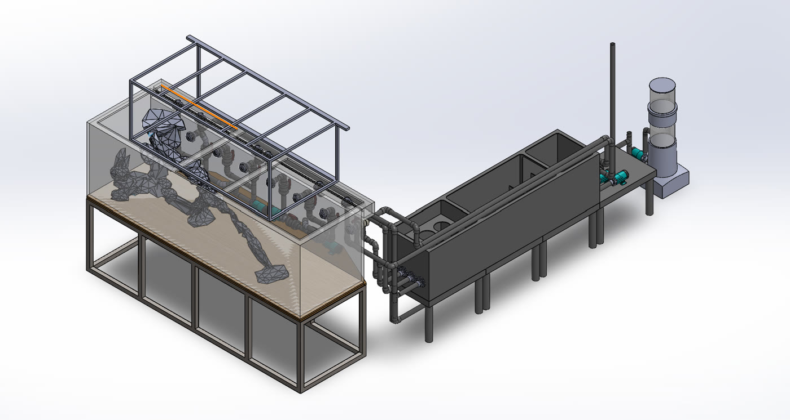
Modeled three custom 700+ gallon aquarium systems for clients, including plumbing, stands, sumps, and equipment layout. The assembly above shows one full system: the display tank on its steel stand, the rockwork and lighting frame, and the return plumbing to a multi-chamber sump, pumps, and protein skimmer. Used flow simulation to improve water circulation and eliminate dead zones before the systems were built. The video shows flow trajectories through the tank, colored by pressure.
Tools: SolidWorks, SolidWorks Flow Simulation
Aquarium Stand and Floor Load Analysis
Picasso Exotic Aquatics · 2025 – present
Performed stress and strain analysis on aquarium stands and the floors supporting them to verify they could safely carry 700+ gallon systems.
Tools: Patran (FEA)
Aquarium Front Glass FEA: Bracing vs. Glass Thickness
Structural study · July 2026
Aquarium builders control front-glass bowing in one of two ways. Framed tanks add a center brace across the top. Rimless tanks use thicker glass. I built a finite element model of a 75-gallon aquarium's front panel to compare the two approaches directly, keeping everything else constant.
87%less bowing with a center brace
85%less bowing with 12 mm glass
72%lower peak stress with 12 mm glass
The Model
I modeled the 48.5 in × 21.25 in front panel as a soda-lime glass shell with a 0.5 in Quad4 mesh (4,400 elements). The water load was applied as a hydrostatic pressure that increases linearly from 0 psi at the waterline to 0.767 psi at the bottom, for a total of 395 lbf. The bottom and side edges were restrained out-of-plane to represent the frame. I ran three cases, changing only one variable at a time:
| Case | Glass | Center brace | Purpose |
|---|
| 1 | 1/4 in | Yes | Braced baseline |
| 2 | 1/4 in | No | Isolate the brace effect |
| 3 | 12 mm | No | Isolate the thickness effect |
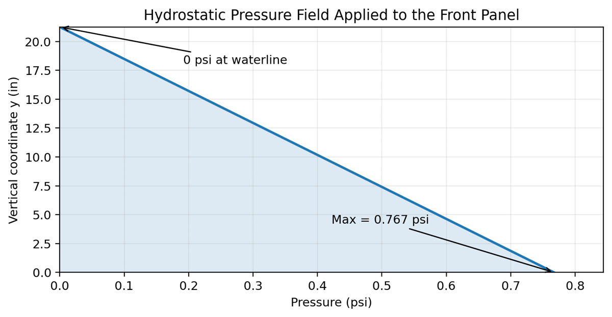
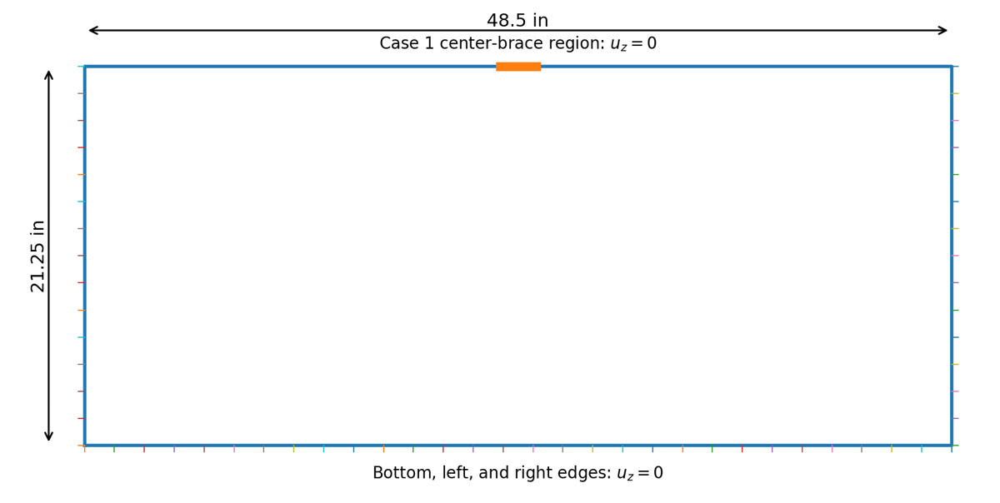
Left: hydrostatic pressure applied to the panel. Right: panel geometry and restraints, with the center-brace region used in Case 1.
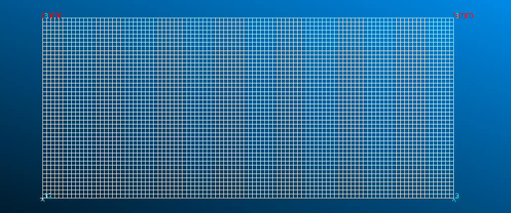
Structured 0.5 in Quad4 shell mesh, reused for all three cases so the comparison stays controlled.
Results
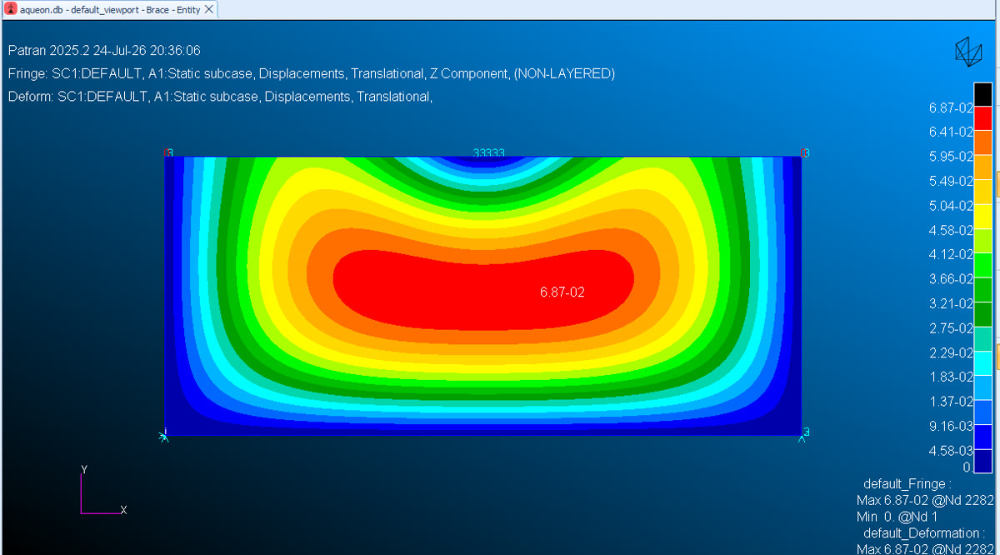
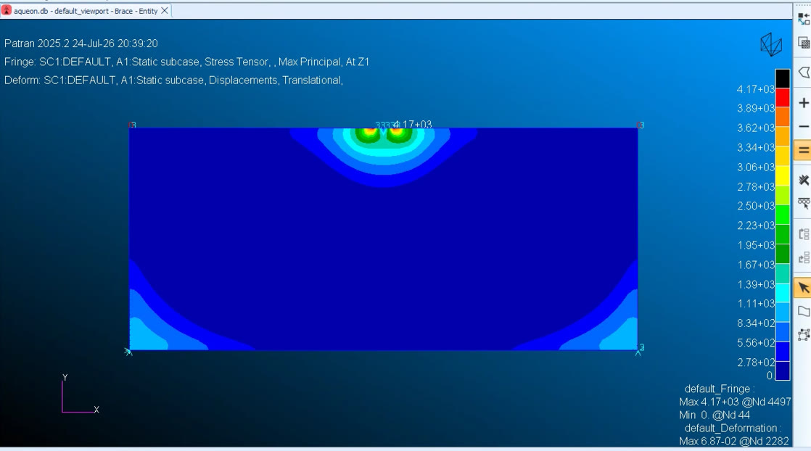
Case 1, 1/4 in with brace: 0.069 in maximum deflection, but a 5.0 ksi local stress peak where the brace meets the glass.
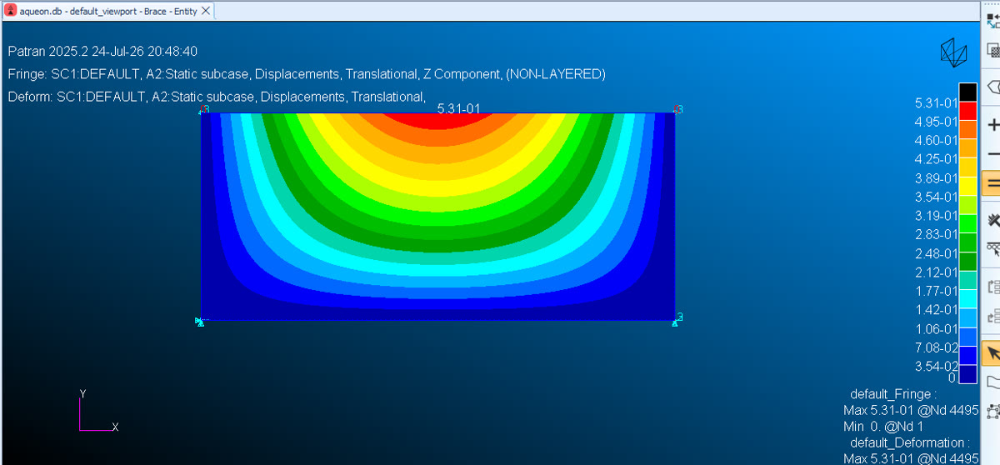
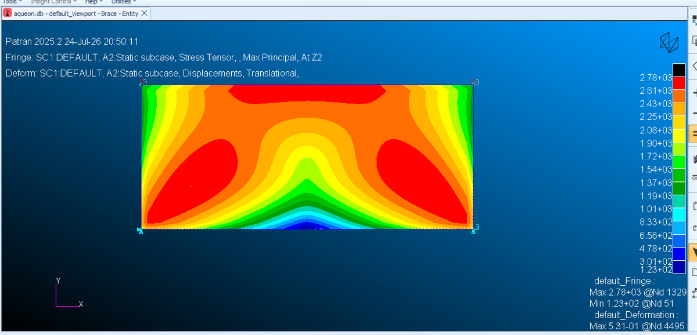
Case 2, 1/4 in without brace: the panel bows as one plate, reaching 0.531 in maximum deflection and 2.8 ksi peak stress.
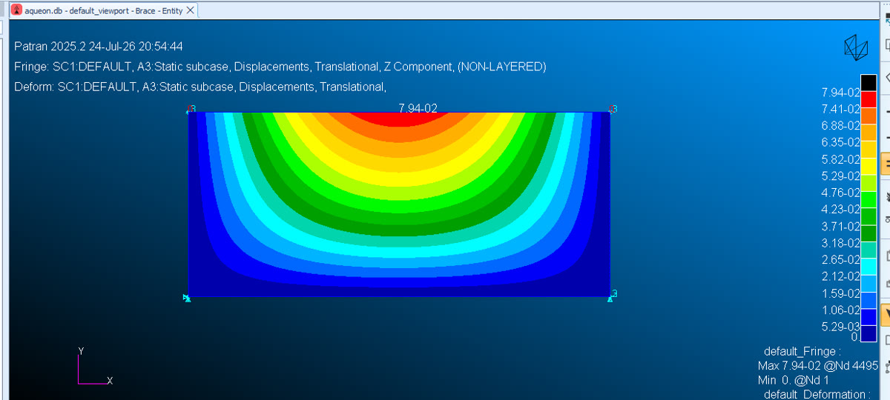
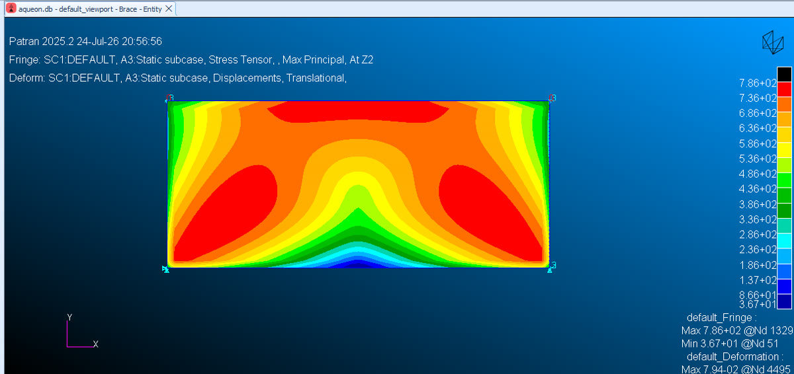
Case 3, 12 mm without brace: same deformation shape as Case 2, but only 0.079 in deflection and 0.79 ksi peak stress.
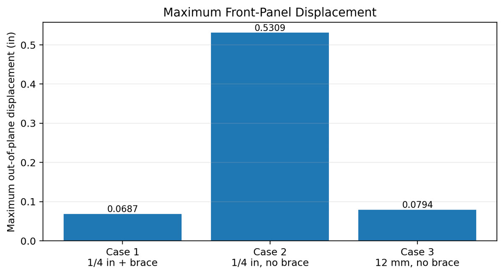
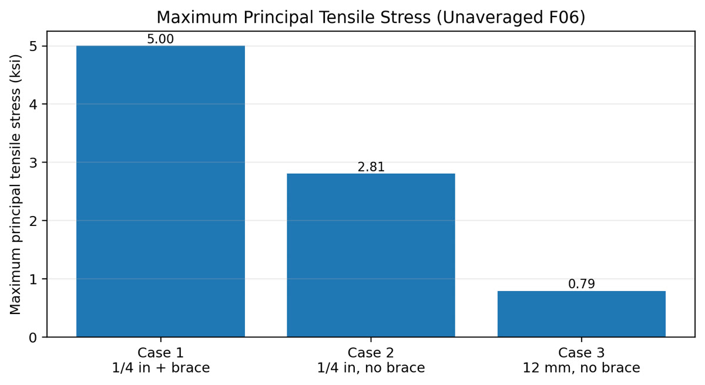
Maximum out-of-plane displacement and maximum principal tensile stress for all three cases.
Takeaways
- Both methods control bowing. A center brace cut deflection by 87%, and 12 mm glass cut it by 85%.
- Thicker glass gives the lowest stress overall. Increasing the thickness 1.89× reduced deflection by 6.7×, which closely matches the thickness-cubed relationship from plate bending theory.
- A brace creates a local stress hotspot. Treated as a rigid point restraint, the brace raised the peak tensile stress by 78% at its ends. A real brace is more compliant and would spread that load, so this is a modeling upper bound, not a design verdict.
I verified the model by checking force balance: the applied load and the support reactions both came to 395.43 lbf in every case. Next steps would be a mesh-convergence study and a compliant brace-contact model before using these results to make design-safety decisions.
Tools: MSC Patran, MSC Nastran (SOL 101 linear statics)
Protein Skimmer Air-Inlet Dryer
Picasso Exotic Aquatics · 2025 – present
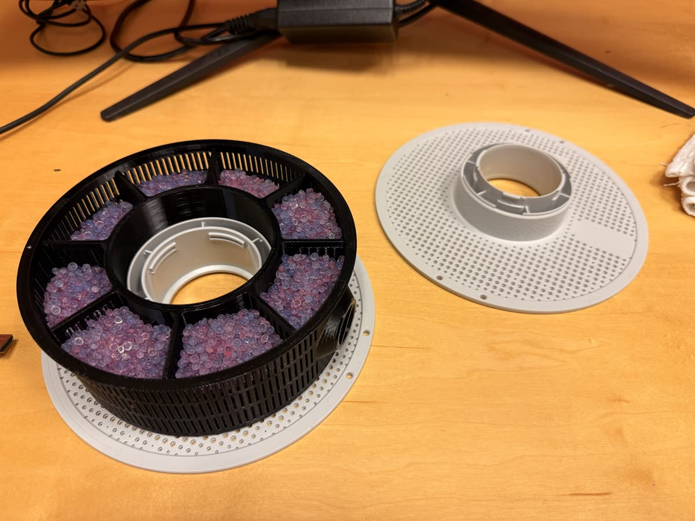
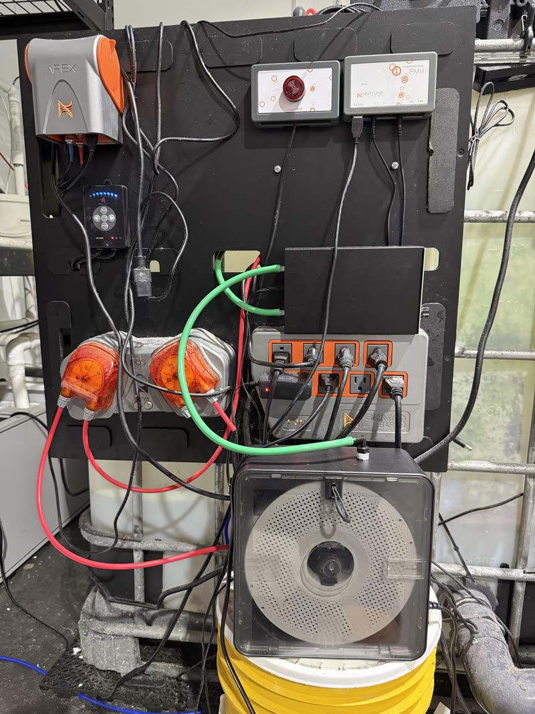
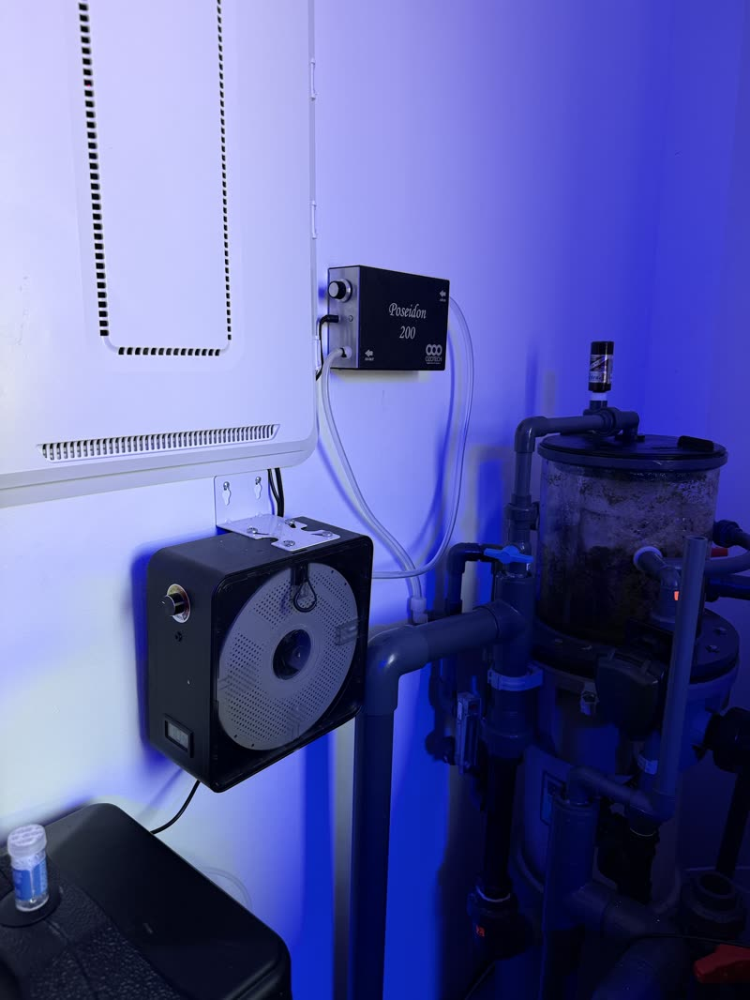
A protein skimmer pulls in room air through a venturi and mixes it with tank water to form fine bubbles that strip out dissolved organics. On reef systems, that intake air is often routed through a CO₂ scrubber first. The scrubber's media absorbs CO₂ from the air, so the skimmer injects CO₂-depleted air into the water, which helps raise and stabilize the tank's pH.
The problem is moisture. Humid room air, plus moisture carried back from the skimmer, saturates the scrubber media. Wet media clumps, stops absorbing CO₂, and has to be replaced far more often.
I designed and fabricated an air-inlet dryer to solve this. Intake air passes through the dryer before it reaches the CO₂ scrubber, so the scrubber only sees dry air on its way to the skimmer's air inlet:
Room air → Dryer → CO₂ scrubber → Protein skimmer → Tank water
- The core is a 3D-printed, segmented basket that holds color-changing desiccant beads. The beads change color as they absorb water, so it's easy to see when they need to be replaced or regenerated.
- The basket's slotted walls and radial compartments spread the beads evenly and let air pass through the whole bed, so air doesn't channel through just one section.
- The basket seats on a perforated cover inside a sealed housing, with tubing connections to the scrubber and skimmer.
- The unit is mounted on the equipment board and on the wall beside the skimmer, so the air lines stay short.
Keeping the scrubber media dry makes CO₂ removal more effective and reduces moisture buildup in the air lines and equipment.
Tools: SolidWorks, 3D printing, prototype fabrication